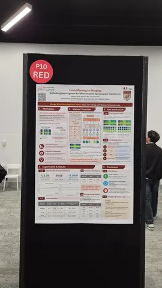
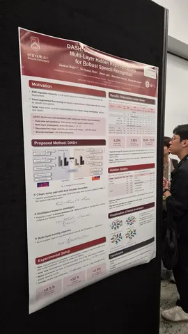
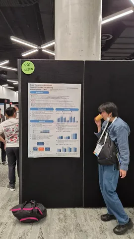

Мы уже рассказывали об устных докладах на конференции, а теперь пришло время разобрать работы с постерной сессии.
From Masking to Merging: Rethinking SpecAugment for Efficient Audio Spectrogram Transformer
Сложно переоценить влияние SpecAugment на всю область голосового ввода. При этом базовая идея метода никак не изменилась с тех пор, как его предложили:
- маскируем несколько участков по оси частот;
- маскируем несколько участков по оси времени;
- искажаем некоторые участки (даёт меньше всего пользы и часто не используется).
Авторы статьи как раз предлагают изменение, актуальное для аудиомоделей, которые бьют спектрограммы на патчи:
1. Вместо произвольного маскирования делаем маскирование с привязкой к сетке разбиения на токены и дополнительно ненадолго придерживаем эту маску.
2. Пропускаем маскированную спектрограмму через свёрточный фронтенд, делаем flatten в последовательность эмбеддингов и применяем позиционное кодирование.
3. Эмбеддинги, которые соответствуют полностью замаскированным сегментам изначальной спектрограммы, становятся кандидатами для агрегации.
4. Берутся r пар токенов, делается попарный max pooling, результат подставляется вместо одного из токенов, в то время как второй выбрасывается.
Получается дешёвый способ хоть и не кратно, но всё же повысить пропускную способность тренировки (потенциально) без потери качества за счёт того, что входные последовательности начинают тратить меньше VRAM.
Лично для меня нюанс в том, что у авторов как агрегации типа max/sum/mean, так и простой random drop показывают практически идентичные результаты с точки зрения оптимизации. Конкретную процедуру random drop они, конечно, не описывают, но, так или иначе, если вам актуальна эта статья, я бы пробовал именно random drop в качестве первой итерации.
DASH — Dual-View Self-Distillation for Robust Speech Recognition
Здесь авторы предлагают метод повышения устойчивости акустических моделей к шуму через стадию дистилляции после претрейна.
1. Берём предобученную ASR-модель (в статье — Parakeet-TDT-CTC-110M).
2. Используем одну версию в качестве учителя, другую — в качестве студента; через учителя градиенты не проходят, но его веса обновляются через EMA весов студента.
3. В учителя подаем чистое аудио, в студента — зашумлённое.
4. Учим студента выделять из шумных аудио те же признаки, что и учитель из чистых, минимизируем KL(clean ‖ noisy) между распределениями по k-means-прототипам на нескольких слоях, по 512 векторов в каждом кодбуке.
5. Берём дистиллированного студента и делаем последнее ASR-дообучение на зашумлённой версии целевого датасета.
В результате получаем заметное улучшение WER относительно простого дообучения без стадии дистилляции, особенно на шумных данных. Отдельно хочется отметить, что авторы использовали шумы из разных источников для обучения и замеров качества, так что заявить, что они просто выучили шумы, скорее нельзя.
Does Translation-Enhanced Speech Encoder Pre-training Affect Speech LLMs?
В статье проверяют, полезно ли добавлять перевод в претрейн будущего аудиоэнкодера. Берут Whisper-medium-архитектуру и проучивают три варианта модели на одних и тех же аудио, но с разными задачами:
- чистый ASR;
- ASR + AST из трёх языков в английский;
- ASR + AST из трёх языков в английский и наоборот.
Потом энкодеры пришиваются к Llama-3.2 1B/3B и учится только адаптер на ASR, AST, классификацию интента и эмоций.
Замеряются авторы на этих же задачах. Получают существенные профиты в ASR, AST и классификации интентов. Где-то основной скачок в качестве даёт уже однонаправленный перевод (японский CER 22,4% → 16,6% → 15,8%), где-то — двунаправленный (точность классификации английских интентов 57,3% → 58,5% → 64,5%). Уверенно можно сказать, что AST в претрейне аудиоэнкодера особенно помогает задачам на тех языках, аудио которых участвовало в обучении переводу.
#YaInterspeech26
Николай Коновальчук


